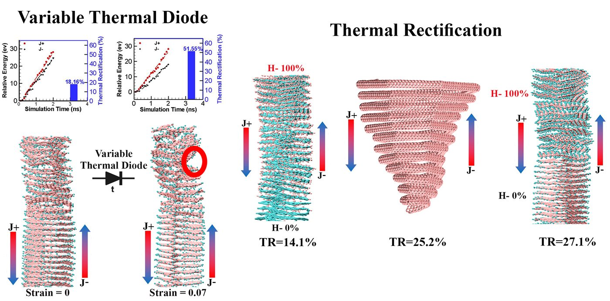
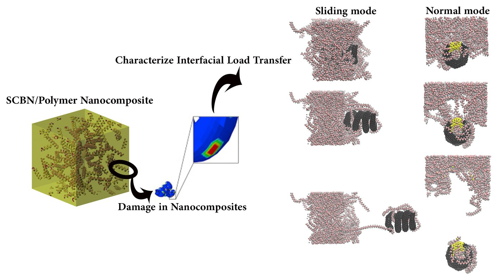
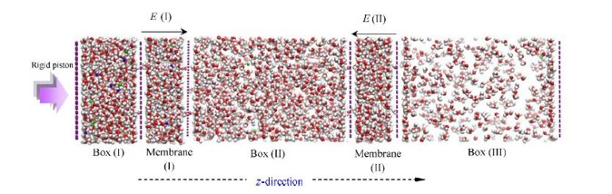

A / 01
Molecular simulation
Atomistic models, molecular dynamics, and rare-event transitions in complex materials and biomolecular systems.
I’m Ali Sharifian, a computational scientist connecting molecular simulation, mechanics, and machine learning to find useful structure in high-dimensional systems.
My work moves between scales: from atomistic simulations of carbon nanostructures to data-driven descriptions of rare molecular transitions and efficient adaptation methods for machine learning.
I build reproducible computational workflows that turn complex trajectories, geometries, and models into interpretable results. The common thread is a focus on structure—what controls a system, what can be simplified, and what must remain flexible.
Scientific Computing Center at KIT ↗Atomistic models, molecular dynamics, and rare-event transitions in complex materials and biomolecular systems.
Low-rank adaptation, dynamical fingerprints, and learning compact representations from high-dimensional data.
Reproducible Python workflows, HPC, LAMMPS, and numerical methods built for transparent, scalable research.
Selected open research and reproducibility packages. Every project links to code, data, or methods you can inspect.
A subspace-aware approach to low-rank adaptation that balances a stable core with a dynamically flexible border.
View repository ↗
02Geometry, hydrogenation, and mechanical strain as controls for heat transport and rectification in spiral carbon nanomaterials.
View repository ↗
03Reproducibility materials for studying geometry-dependent separation and load transfer in SCBN–polyethylene nanocomposites.
View repository ↗
04A molecular dynamics mini-project for pressure- and electric-field-assisted ion separation through nanoporous graphene.
View repository ↗More mechanics, simulation, and scientific tooling lives on GitHub.
Explore all repositories ↗From mechanical engineering and nanomaterials to biomolecular simulation and machine learning.
Computational research at the Scientific Computing Center, working across molecular systems, rare transitions, and data-driven methods.
Graduate research in mechanical engineering, molecular dynamics, carbon nanostructures, nanocomposites, and multiscale modeling across FEM and atomistic methods.
✦ Best Thesis AwardThe foundation: mechanics, heat transfer, numerical modeling, and the drive to understand how systems behave.
I’m always interested in thoughtful research, reproducible science, and conversations that cross disciplinary boundaries.